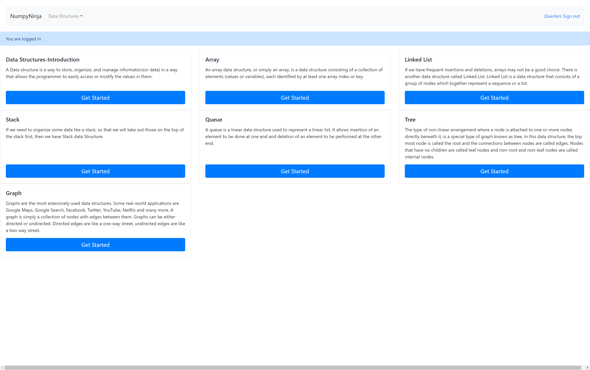
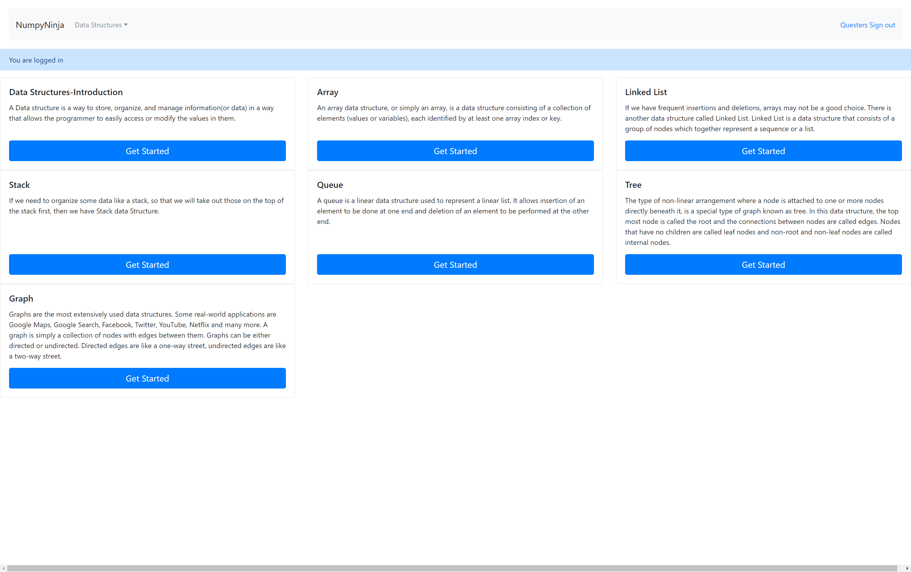

-
Graph functionality
11:13:04 AM / 00:01:01:410 Fail
Graph functionality
01.24.2025 11:13:04 AM 01.24.2025 11:14:05 AM 00:01:01:410 · #test-id=1PassVerify that user is able to navigate to try Editor page for Graph pageGiven The user is on the DSAlgo homepage after signGiven the user is on the Graphmodule pageWhen the user click on Try here button in Graph PageThen the user should navigate to the tryeditor pagePassVerify the user is able to navigate to the Practice Questions mentioned under graph Graph PageGiven The user is on the DSAlgo homepage after signGiven the user is on the Graphmodule pageWhen the user clicks on the Practice Questions linkThen the user should navigated to the Practice Questions pagePassVerify that the user can navigate to the Graph page after signinGiven The user is on the DSAlgo homepage after signWhen the user clicks on the GetStarted button of Graph sectionThen the user is navigated to the Graph pagePassVerify the user is able to navigate to the Graph Representations option in Graph pageGiven The user is on the DSAlgo homepage after signGiven the user is on the Graph pageWhen the user clicks on the Graph Representations linkThen the user should navigated to the Graph Representations pagePassVerify the user is able to navigate to the Practice Questions mentioned under graph Graph PageGiven The user is on the DSAlgo homepage after signGiven the user is on the Graph Representation pageWhen the user clicks on the Practice Questions linkThen the user should navigated to the Practice Questions pageFailVerify the user see list of Practice Questions in Practice Questions PageGiven The user is on the DSAlgo homepage after signGiven the user is on the Graph Representation pageWhen the user clicks on the Practice Questions linkThen the user should see list of Practice Questions in Practice Questions PagedsAlgoHooks.Hooks.tearDown(io.cucumber.java.Scenario)Verify_the_user_see_list_of_Practice_Questions_in_Practice_Questions_Page PassVerify that user is able to run valid Python code in Try Editor for Graph PagePassVerify that user is able to run valid Python code in Try Editor for Graph PageGiven The user is on the DSAlgo homepage after signGiven The user is on the tryeditor page of Graph moduleWhen The user enters code "Valid", "tryEditor" and 1 clicks the Run buttonThen The user should see an result "successouput", "tryEditor" and 1PassVerify that user is able to run valid Python code in Try Editor for Graph PageGiven The user is on the DSAlgo homepage after signGiven The user is on the tryeditor page of Graph moduleWhen The user enters code "Invalid", "tryEditor" and 1 clicks the Run buttonThen The user should see an result "alertmessageoutput", "tryEditor" and 1PassVerify the user is able to navigate to the options under DataStructure DropDown from Graph pageGiven The user is on the DSAlgo homepage after signWhen the user clicks on the options under "Home2" and 6 dataStructure after signinThen The user should be navigated to the options page after sign "Home2" and 6PassVerify that user is able to navigate to try Editor page for GraphRepresentation pageGiven The user is on the DSAlgo homepage after signGiven the user is on the Graph Representation pageWhen the user click on Try here button in Graph Representation PageThen the user should navigate to the tryeditor pagePassVerify the user is able to navigate to the Graph option in Graph pageGiven The user is on the DSAlgo homepage after signGiven the user is on the Graph pageWhen the user clicks on the Graphmodule linkThen the user should navigated to the Graphmodule pageFailVerify that user receives error when user clicks on run button without entering code in tryeditor for Graph PageGiven The user is on the DSAlgo homepage after signGiven The user is on the tryeditor page of Graph moduleWhen the user clicks the Run buttonThen the user should see an error messagedsAlgoHooks.Hooks.tearDown(io.cucumber.java.Scenario)Verify_that_user_receives_error_when_user_clicks_on_run_button_without_entering_code_in_tryeditor_for_Graph_PagePassVerify that user is able to run valid Python code in Try Editor for Graph Representation PagePassVerify that user is able to run valid Python code in Try Editor for Graph Representation PageGiven The user is on the DSAlgo homepage after signGiven The user is on the tryeditor page of Graph RepresentationWhen The user enters code "Valid", "tryEditor" and 1 clicks the Run buttonThen The user should see an result "successouput", "tryEditor" and 1PassVerify that user is able to run valid Python code in Try Editor for Graph Representation PageGiven The user is on the DSAlgo homepage after signGiven The user is on the tryeditor page of Graph RepresentationWhen The user enters code "Invalid", "tryEditor" and 1 clicks the Run buttonThen The user should see an result "alertmessageoutput", "tryEditor" and 1FailVerify that user receives error when user clicks on run button without entering code in tryeditor for Graph PageGiven The user is on the DSAlgo homepage after signGiven The user is on the tryeditor page of Graph RepresentationWhen the user clicks the Run buttonThen the user should see an error messagedsAlgoHooks.Hooks.tearDown(io.cucumber.java.Scenario)Verify_that_user_receives_error_when_user_clicks_on_run_button_without_entering_code_in_tryeditor_for_Graph_Page
PassVerify that user is able to run valid Python code in Try Editor for Graph PagePassVerify that user is able to run valid Python code in Try Editor for Graph PageGiven The user is on the DSAlgo homepage after signGiven The user is on the tryeditor page of Graph moduleWhen The user enters code "Valid", "tryEditor" and 1 clicks the Run buttonThen The user should see an result "successouput", "tryEditor" and 1PassVerify that user is able to run valid Python code in Try Editor for Graph PageGiven The user is on the DSAlgo homepage after signGiven The user is on the tryeditor page of Graph moduleWhen The user enters code "Invalid", "tryEditor" and 1 clicks the Run buttonThen The user should see an result "alertmessageoutput", "tryEditor" and 1PassVerify the user is able to navigate to the options under DataStructure DropDown from Graph pageGiven The user is on the DSAlgo homepage after signWhen the user clicks on the options under "Home2" and 6 dataStructure after signinThen The user should be navigated to the options page after sign "Home2" and 6PassVerify that user is able to navigate to try Editor page for GraphRepresentation pageGiven The user is on the DSAlgo homepage after signGiven the user is on the Graph Representation pageWhen the user click on Try here button in Graph Representation PageThen the user should navigate to the tryeditor pagePassVerify the user is able to navigate to the Graph option in Graph pageGiven The user is on the DSAlgo homepage after signGiven the user is on the Graph pageWhen the user clicks on the Graphmodule linkThen the user should navigated to the Graphmodule pageFailVerify that user receives error when user clicks on run button without entering code in tryeditor for Graph PageGiven The user is on the DSAlgo homepage after signGiven The user is on the tryeditor page of Graph moduleWhen the user clicks the Run buttonThen the user should see an error messagedsAlgoHooks.Hooks.tearDown(io.cucumber.java.Scenario)Verify_that_user_receives_error_when_user_clicks_on_run_button_without_entering_code_in_tryeditor_for_Graph_PagePassVerify that user is able to run valid Python code in Try Editor for Graph Representation PagePassVerify that user is able to run valid Python code in Try Editor for Graph Representation PageGiven The user is on the DSAlgo homepage after signGiven The user is on the tryeditor page of Graph RepresentationWhen The user enters code "Valid", "tryEditor" and 1 clicks the Run buttonThen The user should see an result "successouput", "tryEditor" and 1PassVerify that user is able to run valid Python code in Try Editor for Graph Representation PageGiven The user is on the DSAlgo homepage after signGiven The user is on the tryeditor page of Graph RepresentationWhen The user enters code "Invalid", "tryEditor" and 1 clicks the Run buttonThen The user should see an result "alertmessageoutput", "tryEditor" and 1FailVerify that user receives error when user clicks on run button without entering code in tryeditor for Graph PageGiven The user is on the DSAlgo homepage after signGiven The user is on the tryeditor page of Graph RepresentationWhen the user clicks the Run buttonThen the user should see an error messagedsAlgoHooks.Hooks.tearDown(io.cucumber.java.Scenario)Verify_that_user_receives_error_when_user_clicks_on_run_button_without_entering_code_in_tryeditor_for_Graph_Page PassVerify the user is able to navigate to the options under DataStructure DropDown from Graph pagePassVerify the user is able to navigate to the options under DataStructure DropDown from Graph pageGiven The user is on the DSAlgo homepage after signWhen the user clicks on the options under "Home2" and 1 dataStructure after signinThen The user should be navigated to the options page after sign "Home2" and 1PassVerify the user is able to navigate to the options under DataStructure DropDown from Graph pageGiven The user is on the DSAlgo homepage after signWhen the user clicks on the options under "Home2" and 2 dataStructure after signinThen The user should be navigated to the options page after sign "Home2" and 2PassVerify the user is able to navigate to the options under DataStructure DropDown from Graph pageGiven The user is on the DSAlgo homepage after signWhen the user clicks on the options under "Home2" and 3 dataStructure after signinThen The user should be navigated to the options page after sign "Home2" and 3PassVerify the user is able to navigate to the options under DataStructure DropDown from Graph pageGiven The user is on the DSAlgo homepage after signWhen the user clicks on the options under "Home2" and 4 dataStructure after signinThen The user should be navigated to the options page after sign "Home2" and 4PassVerify the user is able to navigate to the options under DataStructure DropDown from Graph pageGiven The user is on the DSAlgo homepage after signWhen the user clicks on the options under "Home2" and 5 dataStructure after signinThen The user should be navigated to the options page after sign "Home2" and 5
PassVerify the user is able to navigate to the options under DataStructure DropDown from Graph pagePassVerify the user is able to navigate to the options under DataStructure DropDown from Graph pageGiven The user is on the DSAlgo homepage after signWhen the user clicks on the options under "Home2" and 1 dataStructure after signinThen The user should be navigated to the options page after sign "Home2" and 1PassVerify the user is able to navigate to the options under DataStructure DropDown from Graph pageGiven The user is on the DSAlgo homepage after signWhen the user clicks on the options under "Home2" and 2 dataStructure after signinThen The user should be navigated to the options page after sign "Home2" and 2PassVerify the user is able to navigate to the options under DataStructure DropDown from Graph pageGiven The user is on the DSAlgo homepage after signWhen the user clicks on the options under "Home2" and 3 dataStructure after signinThen The user should be navigated to the options page after sign "Home2" and 3PassVerify the user is able to navigate to the options under DataStructure DropDown from Graph pageGiven The user is on the DSAlgo homepage after signWhen the user clicks on the options under "Home2" and 4 dataStructure after signinThen The user should be navigated to the options page after sign "Home2" and 4PassVerify the user is able to navigate to the options under DataStructure DropDown from Graph pageGiven The user is on the DSAlgo homepage after signWhen the user clicks on the options under "Home2" and 5 dataStructure after signinThen The user should be navigated to the options page after sign "Home2" and 5
-
java.lang.AssertionError
3 tests
java.lang.AssertionError
3 failedStatus Timestamp TestName Fail 11:13:23 AM Then the user should see list of Practice Questions in Practice Questions Page Graph functionality.Verify the user see list of Practice Questions in Practice Questions Page.Then the user should see list of Practice Questions in Practice Questions PageFail 11:13:34 AM Then the user should see an error message Graph functionality.Verify that user receives error when user clicks on run button without entering code in tryeditor for Graph Page.Then the user should see an error messageFail 11:13:53 AM Then the user should see an error message Graph functionality.Verify that user receives error when user clicks on run button without entering code in tryeditor for Graph Page.Then the user should see an error message
-
@graph12
2 tests
@graph12
2 passedStatus Timestamp TestName Pass 11:13:23 AM Verify that user is able to run valid Python code in Try Editor for Graph Representation Page Graph functionality.Verify that user is able to run valid Python code in Try Editor for Graph Representation PagePass 11:13:32 AM Verify that user is able to run valid Python code in Try Editor for Graph Representation Page Graph functionality.Verify that user is able to run valid Python code in Try Editor for Graph Representation Page -
@graph14
1 tests
@graph14
1 failedStatus Timestamp TestName Fail 11:13:32 AM Verify that user receives error when user clicks on run button without entering code in tryeditor for Graph Page Graph functionality.Verify that user receives error when user clicks on run button without entering code in tryeditor for Graph Page -
@graph9
2 tests
@graph9
2 passedStatus Timestamp TestName Pass 11:13:04 AM Verify that user is able to run valid Python code in Try Editor for Graph Page Graph functionality.Verify that user is able to run valid Python code in Try Editor for Graph PagePass 11:13:04 AM Verify that user is able to run valid Python code in Try Editor for Graph Page Graph functionality.Verify that user is able to run valid Python code in Try Editor for Graph Page -
@graph7
1 tests
@graph7
1 passedStatus Timestamp TestName Pass 11:13:04 AM Verify the user is able to navigate to the Practice Questions mentioned under graph Graph Page Graph functionality.Verify the user is able to navigate to the Practice Questions mentioned under graph Graph Page -
@graph2
1 tests
@graph2
1 passedStatus Timestamp TestName Pass 11:13:04 AM Verify the user is able to navigate to the Graph option in Graph page Graph functionality.Verify the user is able to navigate to the Graph option in Graph page -
@graph3
1 tests
@graph3
1 passedStatus Timestamp TestName Pass 11:13:04 AM Verify that user is able to navigate to try Editor page for Graph page Graph functionality.Verify that user is able to navigate to try Editor page for Graph page -
@graph1
1 tests
@graph1
1 passedStatus Timestamp TestName Pass 11:13:04 AM Verify that the user can navigate to the Graph page after signin Graph functionality.Verify that the user can navigate to the Graph page after signin -
@graph15
6 tests
@graph15
6 passedStatus Timestamp TestName Pass 11:13:33 AM Verify the user is able to navigate to the options under DataStructure DropDown from Graph page Graph functionality.Verify the user is able to navigate to the options under DataStructure DropDown from Graph pagePass 11:13:33 AM Verify the user is able to navigate to the options under DataStructure DropDown from Graph page Graph functionality.Verify the user is able to navigate to the options under DataStructure DropDown from Graph pagePass 11:13:33 AM Verify the user is able to navigate to the options under DataStructure DropDown from Graph page Graph functionality.Verify the user is able to navigate to the options under DataStructure DropDown from Graph pagePass 11:13:33 AM Verify the user is able to navigate to the options under DataStructure DropDown from Graph page Graph functionality.Verify the user is able to navigate to the options under DataStructure DropDown from Graph pagePass 11:13:34 AM Verify the user is able to navigate to the options under DataStructure DropDown from Graph page Graph functionality.Verify the user is able to navigate to the options under DataStructure DropDown from Graph pagePass 11:13:37 AM Verify the user is able to navigate to the options under DataStructure DropDown from Graph page Graph functionality.Verify the user is able to navigate to the options under DataStructure DropDown from Graph page -
@graph5
1 tests
@graph5
1 passedStatus Timestamp TestName Pass 11:13:04 AM Verify the user is able to navigate to the Graph Representations option in Graph page Graph functionality.Verify the user is able to navigate to the Graph Representations option in Graph page -
@graph11
1 tests
@graph11
1 failedStatus Timestamp TestName Fail 11:13:20 AM Verify that user receives error when user clicks on run button without entering code in tryeditor for Graph Page Graph functionality.Verify that user receives error when user clicks on run button without entering code in tryeditor for Graph Page -
@graph8
1 tests
@graph8
1 failedStatus Timestamp TestName Fail 11:13:04 AM Verify the user see list of Practice Questions in Practice Questions Page Graph functionality.Verify the user see list of Practice Questions in Practice Questions Page -
@graph6
1 tests
@graph6
1 passedStatus Timestamp TestName Pass 11:13:04 AM Verify that user is able to navigate to try Editor page for GraphRepresentation page Graph functionality.Verify that user is able to navigate to try Editor page for GraphRepresentation page -
@graph4
1 tests
@graph4
1 passedStatus Timestamp TestName Pass 11:13:04 AM Verify the user is able to navigate to the Practice Questions mentioned under graph Graph Page Graph functionality.Verify the user is able to navigate to the Practice Questions mentioned under graph Graph Page
Started
Jan 24, 2025 11:13:03 AM
Ended
Jan 24, 2025 11:14:05 AM
Features Passed
0
Features Failed
1
Features
Scenarios
Steps
Timeline
Tags
| Name | Passed | Failed | Skipped | Others | Passed % |
|---|---|---|---|---|---|
| @graph12 | 2 | 0 | 0 | 0 | 100% |
| @graph14 | 0 | 1 | 0 | 0 | 0% |
| @graph9 | 2 | 0 | 0 | 0 | 100% |
| @graph7 | 1 | 0 | 0 | 0 | 100% |
| @graph2 | 1 | 0 | 0 | 0 | 100% |
| @graph3 | 1 | 0 | 0 | 0 | 100% |
| @graph1 | 1 | 0 | 0 | 0 | 100% |
| @graph15 | 6 | 0 | 0 | 0 | 100% |
| @graph5 | 1 | 0 | 0 | 0 | 100% |
| @graph11 | 0 | 1 | 0 | 0 | 0% |
| @graph8 | 0 | 1 | 0 | 0 | 0% |
| @graph6 | 1 | 0 | 0 | 0 | 100% |
| @graph4 | 1 | 0 | 0 | 0 | 100% |